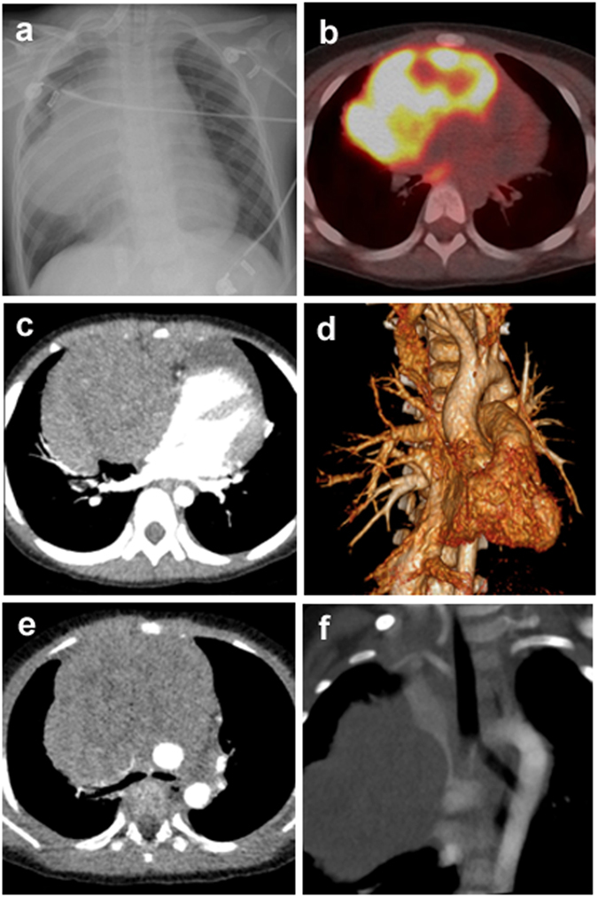

疾病 血液
T-ALL ｜ T-淋巴母細胞白血病／淋巴瘤 · T-lymphoblastic Leukemia/Lymphoma 筆記更新 2026-07-26· 整理狀態：可用
加入閱讀清單 其他名稱 4 T-ALL · T-LBL · T-淋巴母細胞白血病／淋巴瘤 · T-lymphoblastic Leukemia/Lymphoma
一句話總覽
未成熟 T 淋巴母細胞（TdT+）腫瘤，好發 青少年／年輕男性 ，招牌是前縱膈（胸腺）腫塊 。骨髓負荷高＝白血病像（T-ALL），腫塊為主＝淋巴瘤像（T-LBL）。第一個要命的常不是白血病本身，而是腫塊壓迫氣道與大血管 。
30 秒行動卡
診斷關鍵 ：青少年男性＋前縱膈腫塊 → TdT+、cCD3、CD5、CD7
治療骨架 ：高強度多藥 ALL 方案＋CNS 預防 ；高危／MRD＋考慮 Allogeneic HSCT↗
絕對不可 ：大前縱膈腫塊病人全身麻醉／仰臥深度鎮靜
定義與定位
項目
重點
本質
未成熟 **T 淋巴母細胞（TdT+）**惡性克隆，源自胸腺分化階段
好發族群
青少年／年輕男性 （口訣：B-ALL 小小孩 → T-ALL 青少年 → AML 老人）
分類位置
急性 × 淋巴性；見 Hema Category
白血病 vs 淋巴瘤
骨髓負荷高＝T-ALL ；縱膈／淋巴結腫塊為主＝T-LBL （同譜系）
病因與機制
flowchart TD
A["胸腺 T 前驅細胞<br/>NOTCH1 路徑活化"] --> B["分化停在<br/>lymphoblast"]
B --> C["胸腺原位堆積<br/>前縱膈腫塊"]
C --> D["壓迫氣管<br/>與上腔靜脈"]
B --> E["骨髓與周邊血浸潤<br/>血球減少、高 WBC"]
classDef key fill:#263238,stroke:#000,color:#fff,font-weight:bold
class D key
筆記中的流程與關係

T-LBL／T-ALL 縱膈侵犯：a 的 CXR 可見巨大縱膈腫塊與右側胸腔白化；c、e 的 CT 顯示腫塊壓迫心包與包繞大血管，f 顯示 SVC encasement。躺平、鎮靜或全身麻醉前必須先評估氣道與血管受壓。Source: Li et al., Sci Rep 2017, Figure 1 （CC BY 4.0）。
臨床表現
典型 ：青少年男性，咳嗽、呼吸困難、胸痛 ；縱膈腫塊；躺下更喘 提示性 ：上腔靜脈症候群 （顏面頸部腫脹、頸靜脈怒張）；肋膜／心包積液；淋巴結腫大少見但重要 ：骨髓浸潤 → 血球減少、可有很高的 WBC ；CNS 侵犯；數天到數週急速惡化
→ 相關主訴流程：Lymphadenopathy↗ 、Pancytopenia↗
診斷
診斷條件
內容
確診
骨髓／組織見淋巴母細胞；優先取風險最低的檢體
形態
lymphoblast：高核質比、胞質少、無 Auer body
免疫表型
TdT+ ＝母細胞性；T 系 cCD3（最專一）、CD5、CD7 ；階段相關 CD1a／CD4／CD8 組合
分子
NOTCH1 路徑突變常見（預後意義依情境）；不靠單一易位定名 ，WHO 2022 亞型更多樣
必查
胸部影像評估氣道／血管受壓 ；腰椎穿刺＋CSF 細胞學；TLS 生化
要開的檢查 ：Flow cytometry↗ 、Bone marrow biopsy↗ 、Lymph node biopsy↗ （無安全替代檢體時）
鑑別診斷
要排除的
支持它的線索
怎麼排除
B-ALL 小小孩、骨痛、無縱膈腫塊
CD19／CD10 vs cCD3／CD5／CD7
AML Auer body 、MPO+ 、牙齦浸潤MPO 與 TdT
Hodgkin Lymphoma 同為年輕人前縱膈腫塊，但病程慢
組織病理（RS cell）；TdT−
成熟 T 淋巴瘤（PTCL ）
年紀較大、結外表現
TdT−
治療
情境
處置
誘導
高強度多藥 ALL 方案 （參考兒童／年輕成人強度）
CNS
CNS 預防必做 ：鞘內化療 ±（高危）顱部 Radiotherapy↗
縱膈腫塊急症
先穩定氣道，診斷與治療同步加速 ；必要時類固醇／化療緊急減積
高危／MRD＋
強化療程或 Allogeneic HSCT↗
支持性
TLS 預防 （高負荷風險大）、Febrile neutropenia↗ 處置
併發症與預後
要盯的併發症 ：初診的氣道阻塞與上腔靜脈壓迫 、Tumor lysis syndrome↗ 、Febrile neutropenia↗ 、CNS 復發預後 ：治療強度足夠時可治癒；決定因子是治療反應與 MRD ，不是單一基因注意 ：傳統上視為比兒童 B-ALL 高危，現代強化方案已大幅改善
禁忌與陷阱
絕對不可
情境
絕對不可
為什麼
該做什麼
大前縱膈腫塊 全身麻醉、深度鎮靜、平躺 肌肉鬆弛＋仰臥使腫塊壓塌氣管與大血管 → 可能無法通氣且無法急救
改半坐臥、局部麻醉可完成的檢查（周邊血流式、骨髓、肋膜液），必要時先會麻醉科
上腔靜脈壓迫
從上肢 大量輸液給藥
回流受阻、藥物滯留
走下肢 靜脈；同時降腫瘤負荷
高 WBC／大腫塊要化療
未水化降尿酸
對化療極敏感 → 大量溶解 → Tumor lysis syndrome↗
先水化降尿酸，追鉀、磷、腎功能
全療程
省略 CNS 預防
CNS 是化療庇護所 → 日後復發
依方案完成鞘內治療
常見錯誤
年輕人前縱膈腫塊只想 Hodgkin Lymphoma ／生殖細胞瘤——T-ALL 可在數天內惡化。
為「拿最好的檢體」直接安排縱膈鏡／開胸——先看周邊血與骨髓能否定案。
忘了 TdT ——成熟 T 淋巴瘤與 T-ALL 的分界就在這裡。
相關連結
SOURCE & CONTEXT
來源與原始筆記 依 [[Hema Category]] 展開；WHO HAEM5（2022）
下載這篇 Markdown ↗ 網站保留原筆記的內容與整理狀態。